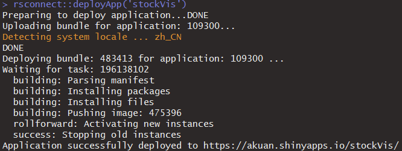

shiny app的网页分享
A web application framework for R
Turn your analyses into interactive web applications
No HTML, CSS, or JavaScript knowledge required
在这之前，需要先知道shiny是什么，以上是官网介绍，你不需要Html,css和js的知识也能够实现强大的交互式数据可视化。那么如何将自己制作的app分享给电脑上没有R的人呢？请看：
Share as a web page
All of the above methods share the same limitation. They require your user to have R and Shiny installed on their computer.
However, Shiny creates the perfect opportunity to share output with people who do not have R (and have no intention of getting it). Your Shiny app happens to be one of the most widely used communication tools in the world: a web page. If you host the app at its own URL, users can visit the app (and not need to worry about code).
If you are familiar with web hosting or have access to an IT department, you can host your Shiny apps yourself.
If you’d prefer an easier experience or need support, RStudio offers three ways to host your Shiny app as a web page:
1.Shinyapps.io.
2.Shiny Server, and
3.Shiny Server Pro
以上是官方的文档，介绍了三种方法来实现shiny app的网页化，这里我选择第一种：shinyapps.io
注册网站后登陆（我用的是github账号登陆），就进入了教程页面。
STEP 1 – INSTALL RSCONNECT
Thersconnectpackage can be installed directly from CRAN. To make sure you have the latest version run following code in your R console:
install.packages('rsconnect')首先是安装这个包，不多说。
STEP 2 – AUTHORIZE ACCOUNT
Thersconnectpackage must be authorized to your account using a token and secret. To do this, click the copy button below and we'll copy the whole command you need to your clipboard. Just paste it into your console to authorize your account. Once you've entered the command successfully in R, that computer is now authorized to deploy applications to your shinyapps.io account.rsconnect::setAccountInfo(name='akuan', token='**************', secret='<SECRET>')
安装完包之后就是配置账户，非常简单，只要将网页上的代码粘贴到R命令行回车运行就可以了。
STEP 3 – DEPLOY
Once thersconnectpackage has been configured, you're ready to deploy your first application. If you haven't written any applications yet, you can also checkout the Getting Started Guide for instructions on how to deploy our demo application. Run the following code in your R console.
library(rsconnect)
rsconnect::deployApp('path/to/your/app')如果上一步没有报错，就可以用上面的代码来发布自己的app了。
我自己试了一下：

成功！ 点这里
当然在这之前你需要先会用shiny，这里是官方教程。